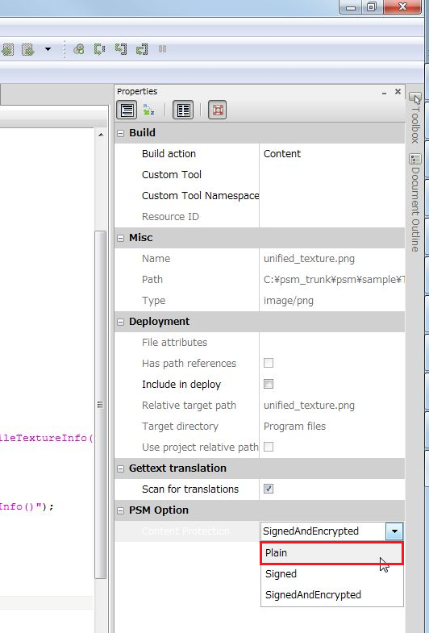

This document explains optimization hints.
Contents
In order to learn the expected performance of the actual device, execute the PSM application with the following settings.
When optimization options are enabled, processing speed increases.
To enable optimization options, perform the following settings.
Place a check in [Menu] - [Project] – [(project name) Options] – [Build] – [Compiler] – [Enable optimizations].
Figure 1 Optimization Options
When a data file is registered in the project, the "SignedAndEncrypted" setting will be set to the default for the file.
When the "SignedAndEncrypted" setting is changed to the "Plain" setting, the decoding and signature processing during file loading will be omitted, and the processing time will be reduced.
To reduce load times, try changing to the Plain setting.
The "Plain" setting is set as follows.
Note: When the Plain setting is set, the image files/sound files will be distributed as-is to the SD card of the Android device, and end users will be able to access these files.
Figure 2 Plain Setting